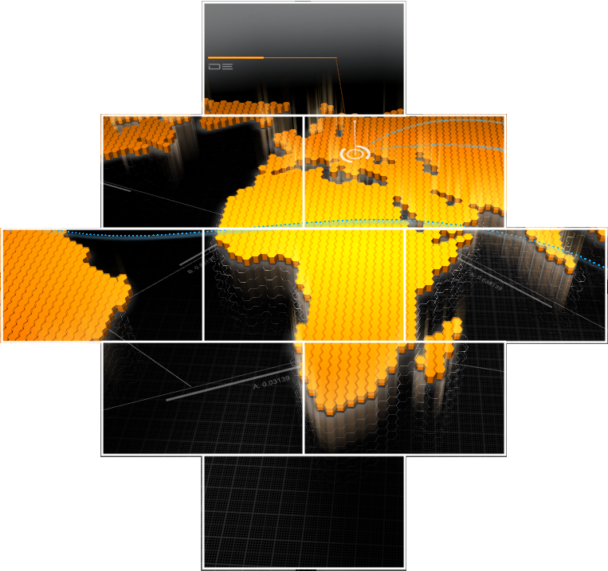

HowTo: Cluster Rendering
Table of Contents
Introduction
If you have a large Ventuz Scene which spans over multiple screens you can try to use one PC with one graphics card and span all outputs together to get one large desktop (render output). Due to some architectural changes, since Windows 7 this is currently only possible with certain graphics card drivers. Make sure your chosen graphics card supports spanning. The main advantage of this solution is that you can be sure that all screens are in sync.
If your setup requires more than one machine, synchronizing animation and video playback becomes a problem. You can use OpenSoundControl (OSC) to start your animations/videos at the same time, but since all PCs are running on different time-bases the animations/videos will drift and get out of sync. To avoid this, Ventuz provides the possibility of using a Cluster Clock, which ensures that all machines connected to the same cluster are receiving an identical timing.
This page will describe the necessary technical steps to create a compelling multi-display / multi-projectors Ventuz presentation with a cluster of machines.
Building a Display Wall
The goal of this section is to setup a cluster wall of 9 displays arranged as a rhombus. The cluster should consist of three machines with three outputs each. We will assume for this example that the displays are bezelless. Each display has a resolution of 1920 x 1080. The final wall with Ventuz content on it could look like this:

Creating a Render Setup
First of all you have to create the appropriate Render Setup configuration. Open the Ventuz Configuration Editor and select the participating machines by selecting their common group in the dropdown in the top-right corner of the Configuration Editor.
If the machines for the cluster are already available in the network, it is important that they use the same non-zero Group ID and each machine has an ID starting from 1 for the first machine, 2 for the seconds, etc. If the machines use multiple outputs, you have to configure the graphics driver to treat them as one logical output. NVIDIA calls this Mosaic technology, AMD calls it Eyefinity. Log onto those machines and use the appropriate tools of the graphics vendor (e.g. NVIDIA Control Panel or AMD Catalyst Control Center).
After the machines have been pre-configured correctly, select the group in the Machine Selector and add a new Render Setup by clicking the Plus button. Choose a sensible name and click OK. This will open the Render Setup Editor with the display configuration of the connected machine or group of machines which is currently active in the Graphics Driver. The initial Render Setup we need is a 3x3 display wall with three machines of 3x1 displays.
If you want to create a Setup without being connected to the real cluster machine, launch the Create New Setup dialog and select the Advanced tab. Displays Total must be set to 3x3; fill in the correct resolution and increase the Num. of Machines to three! Make sure that Displays per Machine is set to 3x1 (an arrangement of 1x3 would be possible but would not give the optimal result). The display position of the upper and lower machine have to be modified to get the required arrangement. Do not forget to save the final result!
The Visual and Logical Resolution per machine is limited to 16384 x 16384!
Save the new Render Setup as the the active configuration in the Ventuz Configuration Editor. Every time Ventuz starts it will automatically use this configuration for rendering! Depending on the ID of the machine the correct part of the setup will be rendered. The ID 0 will render the Cluster Preview. The Machine ID can be adjusted on-the-fly via Live Options.
Deleting displays or display fragments in the Display Editor will not change the basic physical configuration of a Render Setup. The deleted display just won't receive the Ventuz scene content and keeps the default content which is in most cases just black. It is not guaranteed that this content is initialized in memory however! E.g. a 4x1 display setup with deleted right display does NOT result in the same Render Setup configuration as a new 3x1 display setup! The initial Render Setup must always match the physical display configuration (AMD Eyefinity or NVIDIA Mosaic) of the according machine.
Note that changing and saving the active Render Setup configuration on a Machine with running Ventuz will instantly affect the render output!
Working with Render Setups in Ventuz Designer
The scene from the wall will look as follows in the Renderer window of Ventuz Designer. As Ventuz can only render rectangular areas it applies a mask in the preview modes (Cluster and Machine Preview) to mark the render content which will not be visible in the final Production Mode when running in Ventuz Runtime.
Render Setup Modes
There are three different rendering modes for Render Setup rendering available:
- Cluster Preview: This is a simulation of the whole Cluster with arbitrary number of machines and displays. Areas which will not be visible on the physical wall can be masked with a customizable color and alpha value. These values can be set in the AV Configuration or in the Live Options if Ventuz is already running.
- Design Preview: This preview mode is a per-machine preview. In a multi-machine setup Ventuz will only render the content of the selected machine.
- Production Preview: This mode is not suitable for designing a scene. It is the mode which will be used by Ventuz Runtime to render the final content. As displays may be physically moved the render output is not necessarily continuous.
The last two modes are pretty handy if you want to see whether your scene is well prepared for a multi-machine rendering or not. The rendering mode can be changed in the Stage Editor by clicking on the display arrangement preview at the bottom of the Stage Editor. Click on a single highlighted machine or the border of the whole cluster to switch between Machine and Cluster Preview. To switch to Production mode use SHIFT - click.

As the rendering mode is linked to the Machine ID it can also be changed in the ID drop-down box of the Stage Editor. To get a aspect-correct rendering make sure that Format settings in the Project Properties match the aspect of the whole Cluster. The Stage Editor provides a shortcut to adapt the Format to active Cluster configuration: just click on the cross in the toolbar on top.
Layer Effects
There are some issues that need to be considered when using Layer Effects in a Render Setup. Since the machines do not render the whole scene those effects that need to consider multiple pixels at once may not work out of the box. "May not work" means that the effect will not look correct across or close to machine borders.
To fix this issue you can change the Effect Bleed in the Audio-Video Configuration of the Ventuz Configuration Editor. To access this option you need to uncollapse the options of your Video Output and search for the Effect Bleed property. This option expands the rendered texture of the machine by the set value (in pixels). Although the added area is not visible on the physical output it can be considered by said effects and they create correct results again.
Some effects though need to consider the whole screen or you cannot know in advance which pixels it needs to consider. These effects should not be used in a Cluster Setup since it would negate the advantage of using multiple machines - better performance through splitting the image in multiple parts each rendered by only one of the machines.
Following is a list of all Effects with hints on whether you need to consider an Effect Bleed or if you should not use them in a cluster at all.
| Effect | Cluster Compatibility | |
|---|---|---|
| Grayscale Color Grading Color Correction Gain Posterize RGB Posterize HSV Color Difference RGB Noise Delay all Masks | works in cluster without problems | |
| Mosaic Blur Glare Dropshadow Edge Detection Lens Distortion Distortion RGB Distortion 2D Displacement Noise Distortion | works with Effect Bleed only | |
| Feedback | often fails in cluster even with an Effect Bleed - depending on parameters | |
| Crashzoom Polar Distortion Kaleidoscope Distortion | does not work at all even with an Effect Bleed |
Multitouch and Interaction
Under certain circumstances all Interaction nodes work without problems in a Multi-Machine setup. There are a few conditions which have to be fulfilled:
- The BehaviorApply property on all Touch Transformation nodes has to be disabled. This is currently necessary because, if enabled, a physical simulation (like Inertia) is calculated within the nodes and applied to the transformed geometry. But this simulation is currently not synchronized over all machines within a Cluster and will result in different values per machine and thus different render results.
- In the Project Settings in the Interaction category Smoothing Weight and Interpolation Delay must be set to 0.0! This is necessary because smoothing and interpolation processing is based on time difference and the touch data packets are not guaranteed to arrive simultaneously at the touch clients.
- The Cluster must be symmetrical. This means that every machine in the Cluster must have the same resolution. E.g. 4x3 displays should be fed by 3 machines with a 4x1 screen setup. A screen setup like 2x2 + 2x2 + 4x1 is not recommended as the touch calculations are dependent on the resolution of the renderer. Different resolutions can lead to (slightly) different touch transformation results.
- A Master-Client setup should be preferred over an All-Single setup for the Cluster touch network settings (see Interaction Settings). In the Master-Client setup the interaction inputs are only received by the Master machine and distributed to the Clients through a Ventuz-internal protocol.
A Master-Client touch setup for a multi-machine Cluster requires a GroupID > 0 on the involved machines!
All machines of the same Cluster need to receive the same input signals like TUIO. This coordinate space of the input must be mapped to the Cluster coordinate space: top-left corner of the Cluster bounding-box would be [0;0] and bottom-right would be [1;1]. Every single machines takes the input signal and transforms it into its local coordinate space. Note that a Cluster display-wall built up of Windows Touch screens will currently not interpret the touch inputs correctly!
The Web Browser node can also be used on a multi-machine wall to create one huge browser. There are also some limitations which must be considered:
- Every Web Browser node renders the whole web page even if most parts of the page are not visible on a machine.
- Browser page size is currently limited to 4096 x 4096 pixel. Thus a Cluster with a higher resolution will display a scaled up web page.
- Loading and presenting the web content is not synchronized over the machines.
Math Effects
Under unfavorable conditions, some of the Math Effects Nodes might cause issues. In an environment where the machines do not render simultaneously, for example the Modulo operation on one machine may have reached the boundary value while another machine is even 1 or 2 frames behind, having not reached the value. This might be a more or less serious problem, depending on the scene. Please note that this is not a major issue when it comes to cluster rendering. But keep in mind that such issues might exist and think back if unexpected behaviour appears in your scene despite the logic is faultless.
Setting up the Hardware
Make sure that every machine that should participate in a Cluster rendering has the same Ventuz Version installed and that the Ventuz Machine Service is running!
A Ventuz Cluster setup will only work correctly in Ventuz Runtime. If you are running from inside Ventuz Designer, delays, artifacts and synchronization issues can occur. Thus ensure that all presentations and shows are run from within Ventuz Runtime, not Ventuz Designer!
Cluster Clock and Cluster ID
In order to set up a synchronized Cluster environment, you need the Cluster Feature license. Setting the Group ID in the Ventuz Configuration Editor to a value greater 0 will automatically enable the Cluster Clock synchronization via network.
Make sure that all machines which are supposed to use the same cluster clock have the same Group ID (must be greater than zero!) and a different Machine ID applied. The machine with the lowest Machine ID within a group will serve as the Cluster Clock Master. The algorithm used for interchanging the cluster clock information is easy and transparent: Every machine sends out its current time right after it has finished rendering a frame but before the vertical retrace of the graphics card has occurred. As soon the vertical retrace releases the renderer from its wait state every machine receives all clock information from all other machines - include its own. Every machine simply selects the clock from the lowest Machine ID it has received and adds a value of one to enter the next rendering cycle. This makes the lowest ID the Master but if the master stops rendering or has been disconnected from the network another machine will become the Master on-the-fly!
For synchronized Clusters in DirectX Output mode it is important to set the Prevent D3D Queuing to ON in the AV Configuration!
To achieve a properly working Cluster Clock it is crucial that:
- You are using machines with identical hardware.
- You are using the same scene on all machines (use the SystemID node to apply machine specific settings)
- That your scene is running properly with the maximum frame-rate.
- You are using identical project and graphics card settings (a different anti-aliasing setting will bring the clock out of sync).
- Disable Bezel or Overlap settings in the graphics card as this feature is achieved by the Render Setup rendering in Ventuz.
- All machines are connected to the same network.
Once the cluster is set up properly, all timing related nodes are affected by the Cluster timing. Some nodes, like Scroll Text, Counter or Ticker can be configured to work either frame based or time based. In order to sync those nodes via the Cluster Clock the Progress property has to be set to time based.
When activating the statistics in your render window, you will notice some additional information:
Cluster ID 01.02 means that this machine has the Group-ID 01 and the Machine-ID 02, the following number shows the current value of the cluster clock, and the clock from 01.01 indicates that the current clock master has Machine-ID 01. On a slave system the type of the cluster clock is colored green, on a master system it is white.
A font color change on a slave system from green to white indicates that the slave has lost its master clock and is running independently. Make sure that your slave systems show a constant green writing without any flickering between green and white.
There is one unique feature for Nvidia in synchronized cluster setups. When using a Nvidia framelock setup with enabled Swap Sync, it is possible to get the timing for the Cluster Clock from the synchronization board. Since this is not based on a network protocol, this is even more precise. In this case the digits that represent the clock master in the statistics show FL (Framelock). Read more about synchronizing a cluster below.
Whereas Movers in Absolute mode are running exactly in sync no matter when the scene was started, nodes which need to be triggered (e.g. Mover in OneShot mode) are supposed to receive the trigger signal simultaneously. This can be achieved by using e.g. OSC multicasting.
Remoting
As soon as multiple Ventuz machines are running in a Cluster the Remoting Interface can be used to synchronize execution of commands on all related machines.
Network multicast cluster setup
You should generally try to run the Cluster Clock on a separate network with a separate switch (or hub). Since every PC in your Ventuz Cluster broadcasts the Cluster Clock every sixtieth of a second into your network, which can result in a substantial amount of traffic, it is a good idea to detach the Cluster network from the rest of your network.
Multicast messaging with multiple network interface cards
You must set up the network card (NIC) which is connected to the cluster clock network to the lowest metric. Use the route command in the cmd shell. Make sure that you run the cmd shell as Administrator (right click "cmd prompt", choose Run as Administrator).
route change 224.0.0.0 mask 240.0.0.0 <IP of network card here> metric 25
If you want this to persist then add -p, otherwise changes will be lost with the next reboot.
Synchronization Hardware
In a cluster environment you will have to think about synchronizing the outputs. Especially in the case of video playback, having even a single frame of delay between outputs may be unacceptable. For those scenarios, additional hardware is required - so called sync boards. Popular examples are the AMD FirePro S400 Synchronization Board and the NVIDIA Quadro G-Sync Boards. Some information about different synchronization scenarios can be found on the Cluster page.
Setup
To synchronise your cluster outputs, install a synchronization board to every machine in your cluster, following the manufacturers instructions.
Go on with connecting the boards. Every sync board has one BNC connector for an external timing source and two RJ-45 connectors to connect the sync boards among each other. Be aware that the RJ-45 are only for connection between the sync boards. Do not connect them to a usual Ethernet as this can cause damage to the boards. So have a look at the image below. The connection between the sync board is independent from the Ethernet connection.
To synchronize the cluster, one machine acts as the timing server, the others as clients. For Framelock applications, the timing server uses an internal signal as timing source. For Genlock applications, connect an external timing source, e.g. the house sync, to the timing server via the BNC connector as seen in the image above.
The machine that acts as the timing server uses both of its RJ-45 as outputs to distribute the timing signal. A client uses one as input and the other one as output, so the signal can be passed to another client. It is recommended to split the clients in two equal groups and arrange each group as a daisy chain connected to one of the two timing server outputs.
Next, configure the timing master and client in the graphics card driver. See your graphics card manual for details. Below is an example screenshot for a four display machine set up as timing master. Configured in AMD Catalyst Control Center. The timing signal comes from an external sync generator.
Here an example to synchronize two machines where the left machine is the timing master. This configuration is crucial if you want to use Swap Sync in Ventuz!
For detailed information on how to set up the synchronization boards, refer to the manufacturers documentation.
Enable Swap Sync
So far we aligned the displays refresh rates to a common time source, be it internal or external, to avoid tearing or flickering. This was done in the graphics card configuration. As described above, Swap Sync requires support by the application - Ventuz in this case. To enable swap sync, move to the DirectX Output of the AV Configuration.

Be aware that Swap Sync only makes sense and only works if the synchronization boards are configured correctly.
Note that Swap Sync only works in exclusive fullscreen mode!
Our experiences with AMD Boards
- AMD suggests to boot the timing master first, then the clients in the order they are connected to the master. This way the timing signal is present when the client comes to live. Shut down vice versa.
- AMD boards loose their configuration almost every time they loose the timing signal. Best way to make sure to have the boards configured correctly is to use presets in the Catalyst Control Center and load these after every startup. AMD suggests this way too in the Catalyst Control Center help.
Our experiences with Nvidia Boards
- For stable results, Nvidia suggests to boot the clients first, then the master.
- Nvidia boards remember their configuration, even if they loose the timing signal, which makes reconnecting easy.
- For Swap Sync to work properly, only one logical display may be connected to the Nvidia GPU.
- Mosaic mode provides only one logical display, so this works fine.
- All monitors connected to additional Nvidia GPU's must be part of the mosaic.
- It is OK to have an additional Nvidia GPU with no monitors connected
- It is OK to have an additional Amd / Intel GPU with monitors connected (which is very helpful for debugging)
- If one machine stalls for a longer period of time (>~5s), on the other machines in the cluster the graphics driver stalls and is timeout by Windows, restarting the graphics driver, crashing Ventuz. Timeout Detection & Recovery. This might be avoided by the following Registry Key.
// disable Timeout Detection & Recovery KeyPath : HKEY_LOCAL_MACHINE\System\CurrentControlSet\Control\GraphicsDrivers KeyValue : TdrLevel ValueType : REG_DWORD ValueData : 0
Check List
Unfortunately, the list of things that can go wrong while setting up a cluster is quite large. The following - incomplete - list can be used to avoid common problems:
- All machines have exactly the same display driver version.
- An appropriate group ID (>0) and machine ID has been assigned to each machine.
- If the way displays are connected has changed, reboot all systems.
- If a firewall is used, make sure it does not block the cluster clock address/port (225.225.225.1:19300)
- Do not use consumer grade graphics cards. They cause too many weird problems that one cannot probably diagnose.
- Run the presentation in Ventuz Presenter, not in Ventuz Designer.
- The presentation must run in fullscreen mode -> the "Virtual Fullscreen" option is deactivated in the AV Configuration.
- The cluster clock values in the Performance Statistics are rendered in green and do not flicker to gray (without Genlock/Framelock it is in general not possible to avoid this).
- Make sure the framelock settings in the graphics card driver are correct before starting Ventuz.
- If Swap Sync should be used this must be enabled in the AV Config of ALL machines!
- When running in Ventuz Designer is unavoidable (which is advised against), make sure the FPS in the AV Configuration is set consistently. Otherwise animations will run at different speeds.
- As a primary test for a correct setup run the 'Default.vpr' (build-in presentation) on the Cluster. If this very simple scene does not run synchronously, your cluster setup is incorrect. Reassure that the conditions above are fulfilled!
- Your final scene should run smoothly with full framerate on each machine (without cluster synchronization). Many (long) frame-drops disrupt the Cluster synchronization!
When changing the number of displays attached to the graphics card or their cabling, make sure to reboot the machine. Displays are not as hot-pluggable as one might think.